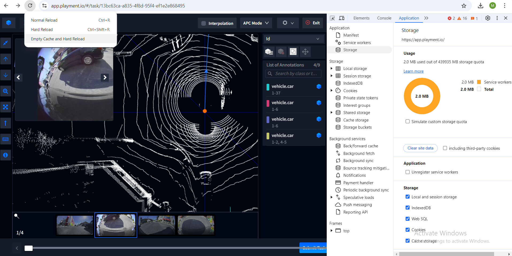

Basic Troubleshooting Steps
If you encounter any issues, follow the steps below to troubleshoot:
- Open the assigned task in app.playment.io.
- Right-click the URL and select "Inspect" (Shortcut: Ctrl+Shift+I on Windows, Cmd+Option+I on Mac).
- Go to the "Applications" tab:
- Navigate to the "Storage" section inside the Applications tab and click "Clear site data".
- Right-click the reload button and select "Empty cache and hard reload" 
- Close the current tab and open the same task in a new tab.